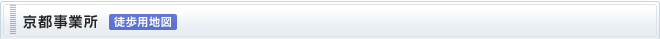
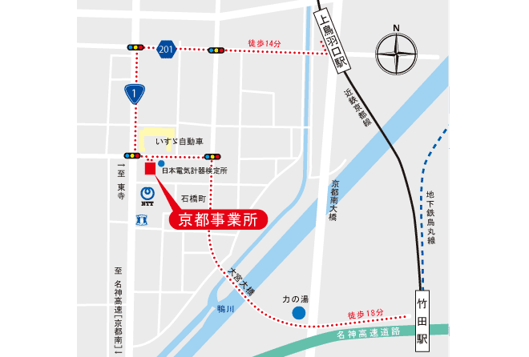

〒601-8135
京都市南区上鳥羽石橋町201
TEL 075-672-3155 FAX 075-691-9155

- 近鉄京都線 上鳥羽口駅 徒歩14分
改札を出て左すぐの信号(交差点)を西(右)方向へ直進、2つ目の信号(国道1号)を南(左)方向へ1つ目の信号を渡った交差点の角。 - 近鉄京都線 竹田駅 徒歩18分
北改札を出て左、バスターミナルから名神高速高架沿いを西方向へ道なりに直進、鴨川を渡り2つ目信号(三叉路)を西(左)方向へ1つ目の信号(国道1号)交差点の角。 - 近鉄電鉄のＨＰ 「Ｋ’ｓＰＬＡＺＡ」ダイヤ検索に乗車駅と下車駅（上鳥羽口または竹田）を入力して時刻表をご確認ください。